PARQUE SANTANDER
El Parque Santander es considerado el corazón de Cúcuta, un lugar de encuentro para locales y turistas. Rodeado de importantes edificaciones como la Catedral Metropolitana, es ideal para disfrutar de un día soleado, pasear o simplemente relajarse. A menudo, se organizan eventos culturales y artísticos en sus instalaciones.
Además, el parque cuenta con áreas verdes, juegos infantiles y espacios para hacer deporte, lo que lo convierte en un sitio versátil para toda la familia.
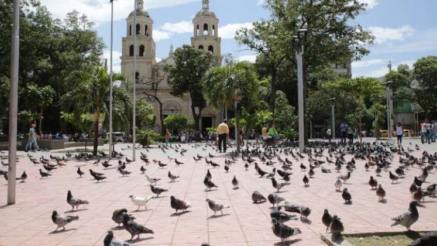
UBICACIÓN
El Parque Santander está situado en el corazón de Cúcuta, específicamente en el centro de la ciudad, rodeado de importantes edificaciones y avenidas.
HISTRORIA
Este parque es un símbolo de la ciudad y ha sido un punto de encuentro desde su fundación. Originalmente, se llamaba "Plaza de la Independencia", y su nombre fue cambiado para honrar a Francisco de Santander, uno de los líderes de la independencia en Colombia.
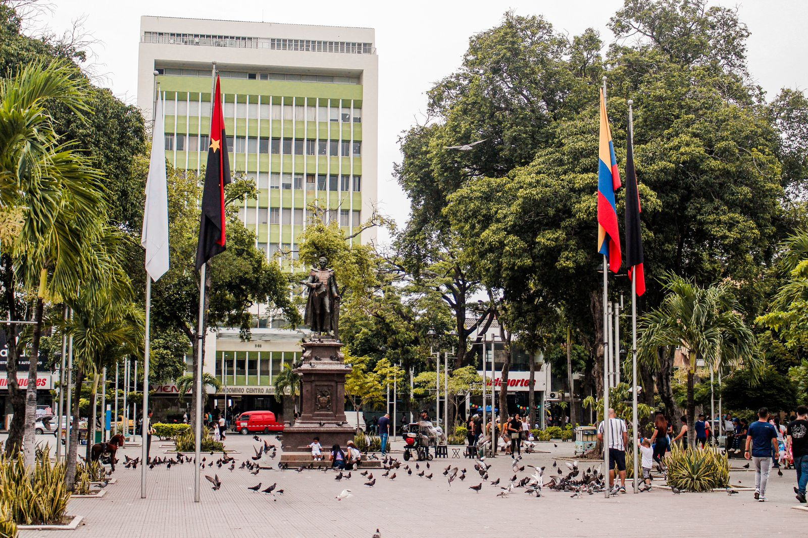

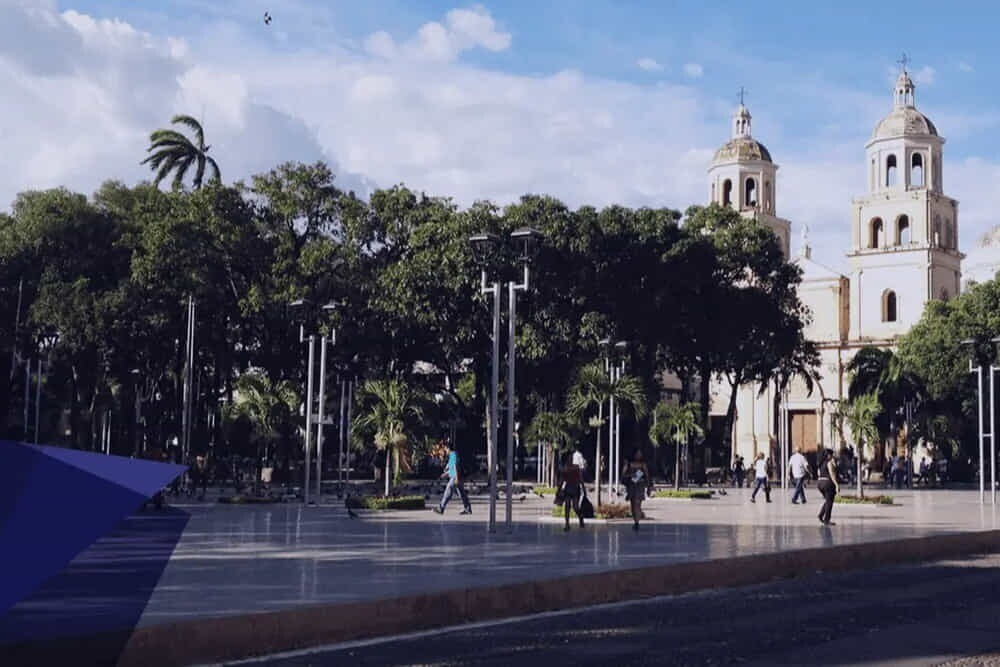
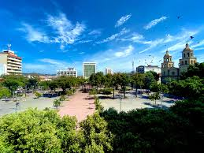
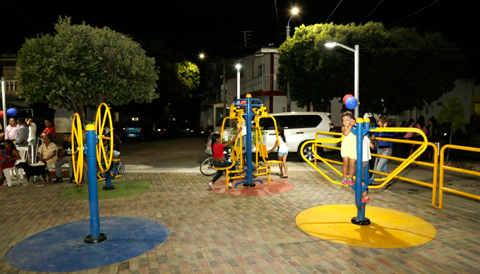
DESCRIPCIÓN
---ESPACIOS VERDES---
El parque cuenta con amplias áreas verdes, jardines bien cuidados y zonas de sombra proporcionadas por árboles frondosos. Es un lugar ideal para relajarse, hacer un picnic o disfrutar de un paseo.
---MONUMENTOS Y ESCULTURAS---
Monumentos y Esculturas: En el parque se encuentran varias esculturas y monumentos, incluyendo una estatua de Francisco de Santander. Estas obras de arte representan la historia y la cultura de la región.
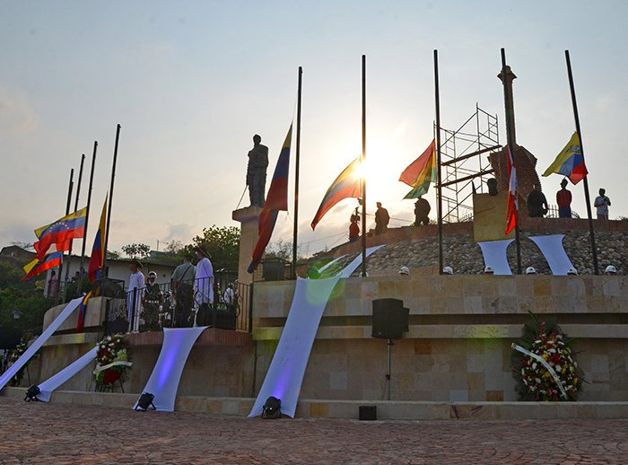
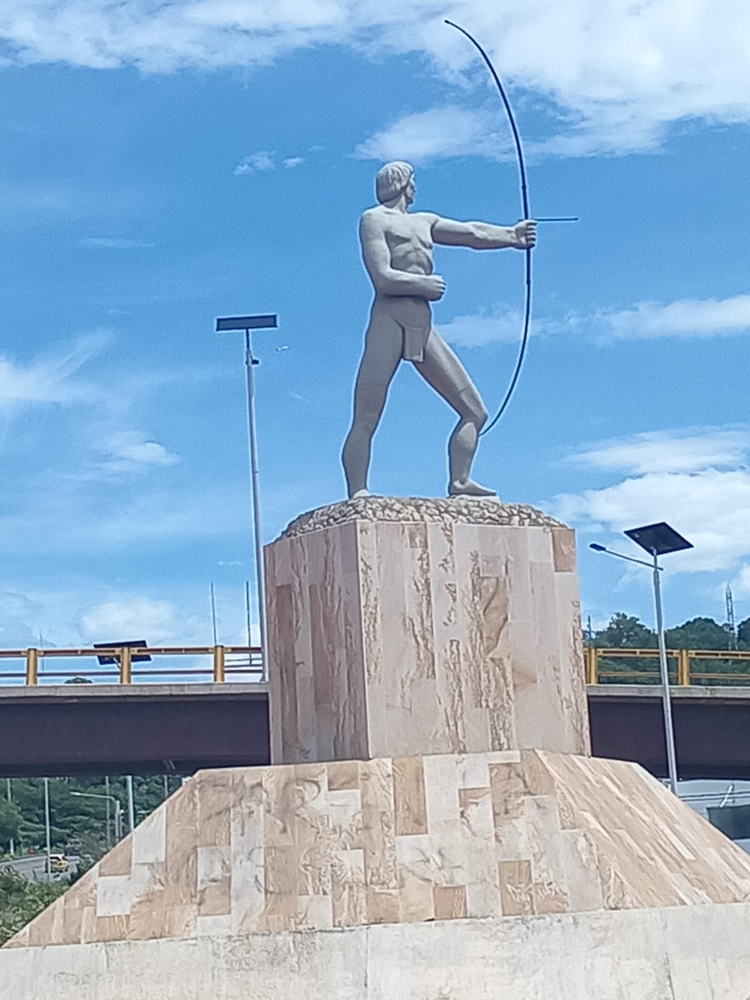
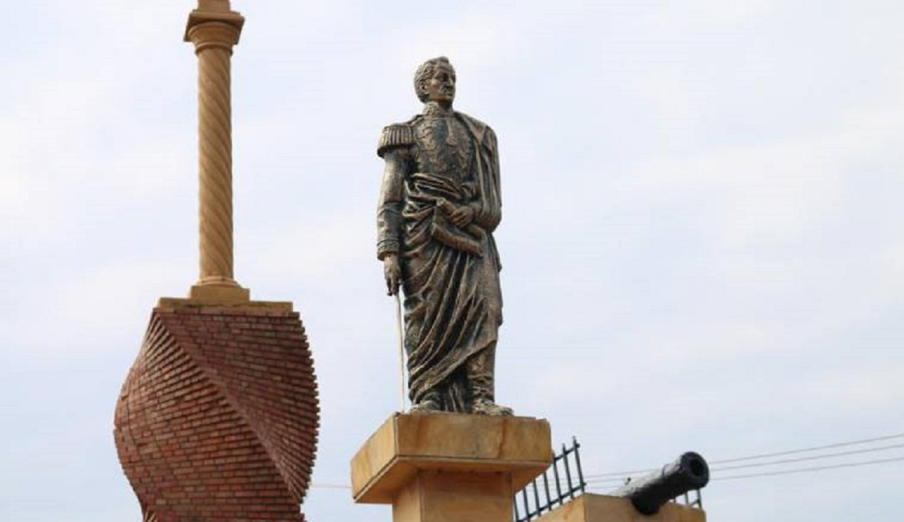
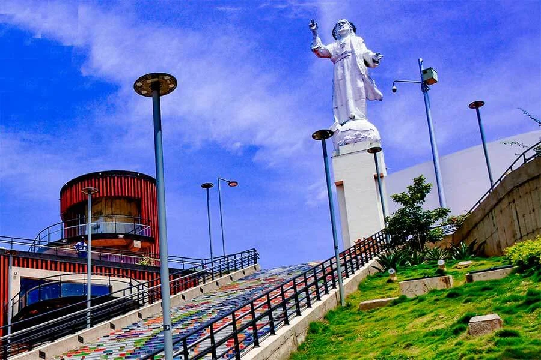
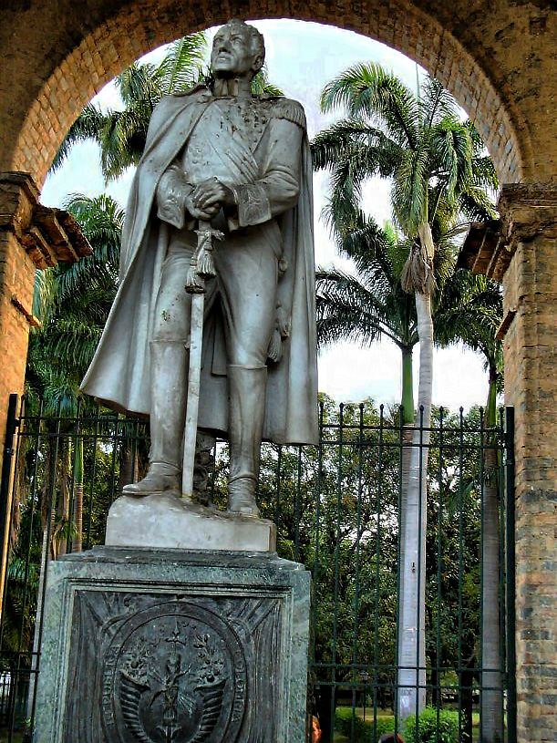
---CATEDRAL METROPOLITANA---
Justo al lado del parque se encuentra la Catedral Metropolitana de Cúcuta, un impresionante edificio que es un punto de referencia importante en la ciudad.
---ACTIVIDADES---
Eventos Culturales: El Parque Santander es escenario de numerosos eventos culturales, conciertos y ferias que atraen tanto a locales como a turistas.
ACTIVIDADES RECREATIVAS
Es común ver a personas corriendo, caminando o practicando deporte en sus alrededores. También hay espacios para niños, como juegos infantiles.
---IMPORTANCIA---
Es un lugar emblemático que representa la identidad cultural de Cúcuta y es un punto de encuentro social. Además, su cercanía a otros lugares históricos hace que sea una parada obligatoria para quienes visitan la ciudad.
"NOTA"
CONSEJOS PARA VISITANTES
---HORARIOS---
Es recomendable visitar el parque durante el día, especialmente por la mañana o al atardecer, para disfrutar del clima y la actividad local.
---SEGURIDAD---
Como en cualquier espacio público, es importante estar atento a tus pertenencias y disfrutar del entorno con precaución.
"PARA RECORDAR"
El Parque Santander no solo es un pulmón verde en medio de la ciudad, sino también un lugar lleno de historia y vida cultural, perfecto para disfrutar de un día al aire libre en Cúcuta.
CENTRO CULTURAL CASA DE LA CULTURA
Este centro cultural es un punto de referencia para la promoción del arte y la cultura en Cúcuta. Alberga exposiciones de arte contemporáneo, talleres y eventos culturales. Su arquitectura es un atractivo en sí mismo, con espacios que fomentan la creatividad y el intercambio cultural.
La Casa de la Cultura también organiza conciertos y actividades para la comunidad, haciendo de este lugar un núcleo de la vida cultural cucuteña.
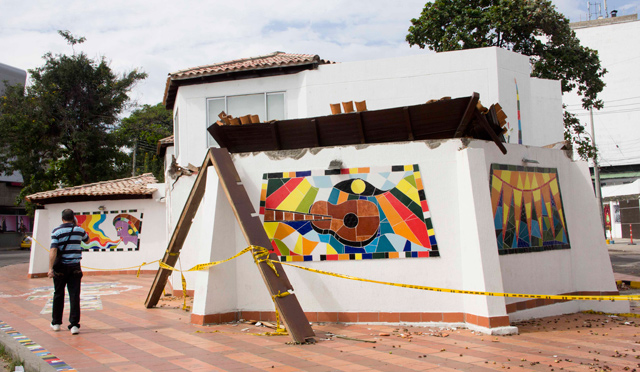
MONUMENTO DE LA BATALLA DE CUCÚTA
Este monumento es un homenaje a la Batalla de Cúcuta, que tuvo lugar en 1870 y fue crucial para la independencia de Colombia. La estructura es impresionante y está rodeada de jardines, lo que la convierte en un lugar ideal para aprender sobre la historia local y disfrutar de un entorno natural.
En el monumento se realizan actos cívicos y celebraciones en conmemoración de la independencia, atrayendo a visitantes locales y extranjeros.
PUENTE INTERNACIONAL SIMÓN BOLIVAR
Este puente conecta Colombia y Venezuela, y es un importante punto de cruce entre ambos países. Es un lugar simbólico que representa la unión y la historia compartida. Desde el puente, se pueden apreciar hermosas vistas del río Táchira y el paisaje circundante.
El puente no solo es un paso fronterizo, sino también un lugar donde se pueden ver interacciones culturales y comerciales entre ambas naciones.
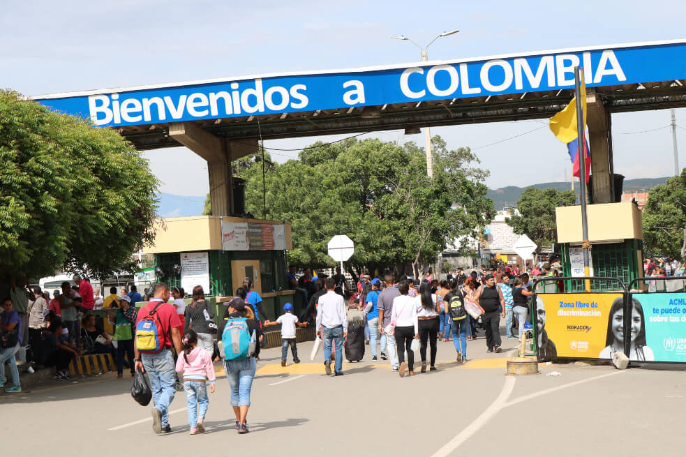
CENTRO HISTORICO DE CUCÚTA
El centro histórico de Cúcuta es una mezcla de historia y modernidad. Aquí encontrarás edificios coloniales, plazas, y una vibrante vida urbana. Un recorrido por sus calles te permitirá descubrir la historia de la ciudad, sus tradiciones y la amabilidad de su gente.
En esta área, se pueden encontrar restaurantes, cafeterías y tiendas, lo que lo convierte en un lugar ideal para pasar un día explorando.
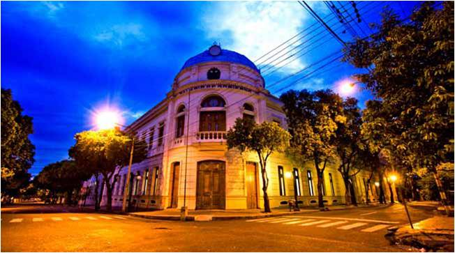